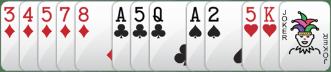

Ludo is a board and dice game, in which players have to strategize their moves to move towards victory. Surely everyone has played this game in their childhood. A lot of our good memories are attached to this game and get triggered when hearing the name Ludo.
Ludo originated from a square board game called Pachisi which was initially played by Royal Mughal Emperors. Then in 1896, in England, the name Ludo was officially patented for the game and it has been known since. The simplicity and fast-paced nature of the game attract everyone and it is loved by all ages. Up to 2-4 players can play the game. The basic aim of Ludo is to play the pawns in the decided path and lead them towards the center of the board, in the Home space..
1. A SQUARE BOARD WITH PATHS, HOME SPACE, AND 4 PERSONAL HOME SPACES OF DIFFERENT COLORS DESIGNED ON IT.
2. 4 DIFFERENT COLORED PAWNS. SIMILAR COLORS AS OF THEIR PERSONAL HOME SPACES.
3. ONE OR TWO DICE.
Ludo is one of the simplest games ever and learning this game is so fun and easy. Four players choose their respective colors of the pawn and the pawns, in the beginning, are at rest in their Personal Homes. Each player gets 4 pawns and can use any pawn to move forward upon the number of the rolled dice, given that the pawns which they want to move are out of their respective Personal Homes. The dice is rolled and the player who gets the number 6 on their dice moves first. As the game progresses, all the pawns of all the players get out of their Personal Homes and will move in the spaces provided on the board. The main objective of the game is to reach first at the center of the board where the Home space is allocated. But the catch is you can get cut off by another player’s pawn on your way to the center. You can also cut-off anyone’s pawn coming in your way. The cut off pawn returns to their Personal Home and will only get when the rolled dice gives the number 6. If a player gets a 6 on the rolled dice, he/she gets a second chance to roll the dice.
There are also shared spaces on the track spaces where every pawn is safe from the others and any number of pawns can sit in this space at a time.
Getting a 6 on the dice is something that can’t be controlled, it purely depends on luck. However, moving the pawns after getting 6 or any numbers on the rolled dice is something that can be controlled. Strategize a few steps ahead in your mind and look out for the smartest move possible when your turn comes up. Always keep an eye out for other pawns as they can cut you off in the middle of your journey towards victory and now you will have to start from the beginning.
Want to try something new and different while maintaining the classic feels of the Ludo game? Well, we provide a few variants of the game for the players who seek to play something out of the box.
The rules for this game remain the same as of the base game except for the winning condition of this game. The player now has to end up with all 4 of their pawns in the Home space. The player should be the first one to do so. Each player gets 15 sec to roll the dice and move the desired pawn. The pawn gets opened when the rolled dice gives the number 6 on its face. The Timer is a new variation of the game. As the name suggests, a predefined time is set before the game session and the game follows a point system. Each step rewards 1 point and reaching the Home space will reward you 56 points, a single pawn. The pawns at the beginning are open already, you just have to walk them towards the Home space in the given time. When the timer hits 00:00, the player with maximum points wins the game.
The game starts normally and sticks to all the basic rules of the Ludo game. The player starts as the dice hits the number 6. Players have to reach the Home space with 1 pawn only. The first player to do so will be declared the winner. Each player gets 15 sec each to roll the dice and play their pawns. Private table Private tables are fully customizable. They can be 4 houses, 1 House, Timer, etc. whatever you desire. You can invite your friends, family, etc. to play with them on this personalized table. You can create your own game.
Private table Private tables are fully customizable. They can be 4 houses, 1 House, Timer, etc. whatever you desire. You can invite your friends, family, etc. to play with them on this personalized table. You can create your own game.
These are the guidelines for you to follow after which you not only will learn how to play rummy games but also become an expert in this game.
HOW TO PLAY RUMMY GAME
Rummy is a simple card game that is played with two or more players. It requires 2 decks of cards if the number of players exceeds five. First player at a table arranges the cards which are dealt into predefined combinations and submits the melded cards. Your primary aim is to be the first players as the rest of the players accumulate points based on the cards in their hands. The player who has the least number of points at the end of a game wins the game.
RUMMY CARD GAME RULES -
Thirteen ranks of each of the four suits and additional 2 jokers are included in 52 cards deck.
four card suits are: clubs (♣), diamonds (♦), hearts (♥) and spades (♠)
cards in each suit are ace, 2, 3, 4, 5, 6, 7, 8, 9, and 10, jack, queen, and king. here face cards are jack, queen and king are and ace can be used either as 1 or as a face card when making the sequences.
joker: jokers act as a replacement or substitute for any card in melding sets or sequences.
points associated with cards: face cards – 10 points are associated with each face card and the rest of the cards have points according to the number printed. no points are associated with printed jokers or wild jokers.
How to Play on The Rummy Signal
Although the game on The Rummy Signal has adequate pointers on the table that tells you about each action you may take, but below is a quick guide on how to play rummy on a table online.
Picking Cards Up:
You have picked two cards up from options namely– the closed deck or the open deck.
Closed Deck : The remaining cards from the deck which has not been dealt with by the players are closed deck. The topmost card on the deck, is unknown to the players.
Open Deck : The pile of cards discarded per player per round is an open deck, these cards are visible to the players.
Rules for picking up cards:
You can pick only one card at a time when it is your turn.
You can only pick the topmost card from Closed Deck or Open Deck, you can choose the pile.
Card Combinations
There are two types of winning card combinations in a game of rummy when you finally meld your cards while placing a Show:
Sequence/Runs
When you have 3 or more cards of the same suit in consecutive order.
For Example: Jack of Diamonds, Queen of Diamonds and King of Diamonds and can together form a sequence -J♦Q♦K♦ Similarly Three of Spades, Four of Spades, Five of Spades, and Six of Spades can together form a sequence - 3♥ 4♥ 5♥ 6♥
Sets/Trails
When you have 3 or more cards of the same rank but of different suits, you cannot use two cards of the same value in a single set.
For Example: Jack of Clubs, Jack of Spades and Jack of Hearts can together form a set - J♣J♠J♥
Similarly, Eight of Diamonds, Eight of Clubs, Eight of Spades and Eight of Hearts can together form a set - 8♦8♣8♠8♥
Printed Joker & Wild Joker
Jokers can be termed as wild cards as they play a very important role in the way your rummy game proceeds and in melding your cards as soon as possible.
There are 2 types of Jokers in Rummy namely– Printed Joker and Wild Joker.
Printed Joker
Every deck of cards 52 cards has 2 extra cards which are known as Printed Jokers and they can be used to make sequences or sets once a pure sequence has been formed

Using Jokers to form Sequence/Sets
Below is how a Printed Joker can be used to form sequences and sets:

Forming an sequence with Printed Joker

Forming an set with Printed Joker
Sort Function
In The Rummy Signal the cards are distributed randomly between all the opponents and appear in the fashion as shown below. You can easily arrange your cards by hitting the sort button. This feature sorts the cards according to their suits in increasing order of their ranks as shown. Using Sort makes it easier for the user to have a quicker understanding of what cards they have, strategize and decide how they want to proceed with the game.

Cards as they are served on the table
Cards after using the Sort feature
Declare
Sometimes when your opponent has a valid meld and you need to declare your cards.
Do you think that you’re being watched? You can hide your cards by simply clicking on the Flip button. When you enable this your cards will no longer be visible to anyone until it’s your turn to play next.
Drop/Auto-Drop Function
As soon as players have been dealt, you may be able to drop a game if you’re displeased with the cards you’ve received. However, this will give you a bunch of undesirable points, so it needs to be a calculated risk! (Don’t try this on your first date!)
Time-bound
The thing which separates it from offline rummy is that you cannot take your own sweet time for every move. This adds to the thrill of your skill!
Discard a Card
Select the card that you want to discard by clicking on it and hit the discard icon that appears above the card. The discarded card will then move to the Open deck and your opponent may either pick this card or pick a card from Closed Deck in their next turn.

Place a Show
Group Cards
Select 2 or more cards that you want to group by clicking on them. After picking your combination, click on Group icon that appears on top of the cards.